금속재료산업기사 (2006-03-05 기출문제)
1과목: 금속재료
1. 그림과 같은 결정격자를 무엇이라고 하는가?
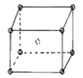
- FCC
- BCC
- HCP
- SCT
(정답률: 67%)

2. 금속의 공통적 성질로 틀린 것은?
- 수은을 제외하고 상온에서 고체이다.
- 열적 전기적 부도체이다.
- 가공성이 풍부하다.
- 금속적 광택이 있다.
(정답률: 82%)
3. 실리콘은 반도체 기판으로서 가장 중요하며 주로 단결정으로 제조하여 사용된다. 단결정 제조법으로 틀린 것은?
- FZ법
- CZ법
- 실리콘, Epitaxial법
- HIP법
(정답률: 48%)
4. 초전도 재료란 전기저항이 0인 상태를 말하는데 초전도현상은 어떤 온도 이하에서만 나타나게 된다. 이 온도를 무엇이라 하는가?
- 절도온도
- 임계온도
- 전위온도
- 전도온도
(정답률: 65%)
5. 스프링용강에 요구되는 특성은 높은 탄성, 높은 내피로성 적당한 점성이다. 이에 적합한 조직은?
- 마르텐사이트
- 투르스타이트
- 솔바이트
- 베이나이트
(정답률: 61%)
6. 처음에 주어진 특정모양의 것을 인장하거나 소성변형 한것이 가열에 의하여 원형으로 되돌아가는 성질을 이용한 합금은?
- 초소성합금
- 초탄성합금
- 형상기억합금
- 수소저장합금
(정답률: 72%)
7. 지름이 2Cm인 시편으로 인장시험 한 결과 최대하중은 12000kgf 이었고, 시편의 지름이 1cm로 줄었을때 파단되었으며 이때의 하중은 8000kgf이었다면 물체 내부에 생긴 힘은?
- 응력
- 마모량
- 소성점
- 탄성율
(정답률: 74%)
8. 6 : 4 황동에 Fe, Mn, Ni, Al 등 원소를 첨가하여 선박의 프로펠러와 같은 주물이나 단조품 제조에 사용되는 고강도 황동의 특징을 설명한 것중 틀린 것은?
- 강도를 증가 시킨다.
- 방식성이 우수하다.
- 취약해진다.
- 내해수성을 증가 시킨다.
(정답률: 77%)
9. 침탄용강으로 가장 적합한 것은?
- 저탄소강
- 중탄소강
- 고탄소강
- 고속도강
(정답률: 53%)
10. 양성분간에 화합물을 형성하지 않고 융체에서 양성분이 완전히 용해하며 고체에서 서로 용해도에 한계가 있고 2종의 고용체가 공정을 만들때의 상태도는?
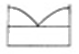
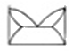
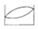
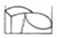
(정답률: 50%)
11. 라우탈의 조성으로 맞는 것은?
- Al-Cu-Si
- Al-Si
- Al-Mg
- Al-Cu-Mn-Ni
(정답률: 72%)
12. 컴퓨터에 이용되는 반도체의 주 성분은?
- Ni
- Si
- Mg
- Al
(정답률: 71%)
13. 다음 중 인의 영향으로 맞는것은?
- 연신율을 증가시키고 용접성을 불량하게한다.
- 입자의 조대화를 방지한다.
- 상온취성의 원인이된다.
- 적열취성의 원인이된다.
(정답률: 66%)
14. 응력-변형선도에서 알수있는 것으로 기계의 설계상 중요한 값으로 재료의 내력이라 부르는 것은?
- 항복강도
- 인장강도
- 파단강도
- 경도
(정답률: 42%)
15. 주철에서 접종처리의 목적으로 틀린 것은?
- Chill화방지
- 격자결함을 증대시켜 강도향상
- 흑연형상의 개량
- 기계적성질 향상
(정답률: 66%)
16. 주조 초경질 공구강인 스텔라이트의 주요성분으로 틀린 것은?
- Co
- Cr
- W
- Nb
(정답률: 58%)
17. 마그네슘합금의 구조재료로서의 특성으로 틀린 것은?
- 실용금속 중에서 가장가벼우며 비중은 1.74이다.
- 상온변형이 쉬워 굽힘, 휨등의 제품에 사용한다.
- 비강도가 커서 휴대용기기의 재료에 사용한다.
- 감쇠능이 주철보다커서 소음방지 구조재로 우수하다.
(정답률: 63%)
18. 브라그법칙에 의한 X선 회절 조건의 관계식으로 맞는 것은?
- 2sinθ = ødnλ
- d = (sinθ/2mλ)
- 2nλ = Tsin
- nλ = 2dsinθ
(정답률: 68%)
19. Cu-Zn합금에서 자연균열을 방지하기 위한 방법으로 틀린 것은?
- 도료나 아연도금을한다.
- 가공재를 185-260℃로 응력제거풀림한다.
- (α+β)황동 및 β황동에 Sn을 첨가한다.
- 수은이나 그 화합물이 생기도록 한다.
(정답률: 58%)
20. 잔류자속밀도가 작으며 발전기, 전동기 등의 철심재료에 가장 적합한 것은?
- 규소강
- 자석강
- 불변강
- 자경강
(정답률: 54%)
2과목: 금속조직
21. 강은 담금질에 의해 페라이트 부분에 마텐자이트가 생성되지 않고 연점이 된다는 것과 관련이 가장 깊은 것은?
- 이상조직
- 풀림조직
- 균열조직
- 자연조직
(정답률: 45%)
22. 정삼각형의 각 정점으로부터 대변에 평행으로 10 또는 100등분하고 삼각형 내의 어느 점의 농도를 알려면 그 점으로부터 대변에 내린 수선의 길이를 읽으면 되는 삼각형법은?
- Linz's법
- Lever relation법
- Cottrell법
- Gibb's법
(정답률: 71%)
23. 선결함에 속하는 것은?
- 원자공공
- 전위
- 크로디온
- 적층결함
(정답률: 69%)
24. 50%A-B합금의 BCC 규칙격자에서 6.5개가 A원자이고 3.5개가 B원자일때 단범위 규칙도는?
- 0.62
- -0.62
- 0.88
- -0.88
(정답률: 41%)
25. 확산계속 D의 단위를 나타내는 것은?
- cm/in
- cm2/in
- cm/sec
- cm2/sec
(정답률: 72%)
26. 알칼리금속 중에서 가장 조밀한 방위에 1개의 원자가 여분으로 들어가 있어 일렬의 결함으로 그림과 같이 나타난 결함은?
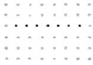
- 슬립
- 쌍정
- 크로디온
- 원자공공
(정답률: 57%)
27. 재결정거동에 영향을 주는 요인이 아닌 것은?
- 초기결정입도
- 풀림시간
- 조성
- 재결정시작후 회복의 양
(정답률: 54%)
28. 동일한 조건에서 시효현상이 가장 현저한 금속은?
- Fe합금
- Al합금
- Pb합금
- Zn합금
(정답률: 52%)
29. 면심입방격자에서 단위격자의 입방체의 한 변의 길이를 무엇이라 하는가?
- 배위수
- 최근접원자
- 근접원자간거리
- 격자상수
(정답률: 50%)
30. 재결정 온도가 가장 높은 금속은?
- Fe
- Ni
- Mo
- W
(정답률: 66%)
31. 다음 3성분계 상태도의 p점에서의 a : b : c 의 성분의 비율은?
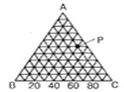
- 50 : 40 : 10
- 40 : 80 : 60
- 50 : 10 : 40
- 40 : 50 : 10
(정답률: 47%)
32. 기본적 상태도에서 아래의 도면과 같은 형태의 상태도는?
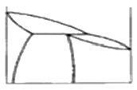
- 전율고용체형
- 포정형
- 고상분리형
- 공정형
(정답률: 50%)
33. 강의 마르텐사이트 변태개시점을 설명한 것 중 맞는 것은?
- 강의 ms점은 냉각속도에 영향을 받으며 고용탄소량과는 무관하다.
- 고순도 철일수록 비화학적 자유에너지가 적게 되므로 Ms점은 급히 강하한다.
- 강의 오스테나이트화 온도가 높으면 Ms점은 강하한다.
- 탄소량이 많을수록 Ms점이 높아진다.
(정답률: 24%)
34. 전기 및 열전도도가 우수한 순서는?
- Au ＞Cu ＞Ag ＞Fe ＞Al
- Cu ＞ag ＞au ＞al ＞fe
- ag ＞Cu ＞Au ＞Al ＞fe
- ag ＞Au ＞Cu ＞Fe ＞Al
(정답률: 52%)
35. 금속의 다결정체 조직으로 수지상 조직을 설명한 것 중 틀린 것은?
- 액상에서 고상으로 변태시 응고잠열이 방출한다.
- 응고잠열의 방출은 평면에서 보다 선단부분에서 빨리 발생한다.
- 나뭇가지 모양으로 생긴 최초의 가지를 1차수지상정이라 한다.
- 1차 수지상정의 성장방향에 평형 또는 일반각을 이룬것을 3차 수지상정이라 한다.
(정답률: 50%)
36. 다음 중 마텐자이트변태의 일반적인 특징으로 틀린 것은?
- 무확산변태
- 변태에 따른 표면기복
- 협동적 원자운동
- 마텐자이트 결정내에 격자결함 없다.
(정답률: 75%)
37. 다음 중 원자배열의 규칙-불규칙 변태 설명으로 틀린것은?
- 용질원자와 용매원자가 규칙적으로 배열된 상태를 규칙격자이다.
- 규칙격자의 합금도 고온이 되면 원자가 이동하여 불규칙한 배열이 된다.
- 규칙도는 불규칙한 상태를 1, 또는 환전히 규칙상태인때를 0 이라 한다.
- 큐리점에 접근함에 따라 규칙-불규칙 변태가 급격히 일어나는 협동현상이다.
(정답률: 45%)
38. 금속중에서 침입형으로 고용하는 원소는?
- B O C N H
- Hg. Ar, Sn, S
- Ne, Br Co Cu Cr
- Cs P Cr Na
(정답률: 74%)
39. 다음 중 3원합금이란?
- 3기압으로 된합금
- 2성분으로된합금
- 3자유도로된합금
- 고체, 액체, 기체로 된합금
(정답률: 43%)
40. 금소의 FCC격자의 Slip면과 방향은?
- {100} <111>
- {111} <110>
- {110} <111>
- {0001} <2110>
(정답률: 62%)
3과목: 금속열처리
41. 18-8 스테인리스강의 용접이음부의 입계부식 방지에 가장 적합한 열처리는?
- 염욕담금질
- 용체화처리
- 소성변형뜨임
- 심랭처리
(정답률: 52%)
42. 강을 항온변태 시켰을때 나타나는 것으로 마텐자이트와 투르스타이트의 중간 조직은?
- 베이나이트
- 페라이트
- 오스테나이트
- 시멘타이트
(정답률: 64%)
43. 용접품의 열처리에 대한 설명으로 틀린 것은?
- 용접품의 열처리는 잔류응력의 경강, 용접부의 재질개선을 목적으로 한다.
- 용접품의 열처리는 응력제거풀림이 이용한다.
- 용접품의 열처리는 저온완화법, 완전풀림등의 처리를 한다.
- 용접품의 열처리는 용체화 열처리나 담금질 열처리는 하지 않는다.
(정답률: 65%)
44. 고주파 담금 유도코일의 설명과 관계 적은 것은?
- 소재는 구리가 좋다.
- 제품의 형상에 따라서 여러 가지 형태이다.
- 단권형, 다권형, 환형, 각형 등이 있다.
- 외면코일은 관 내부 가열에 적당하다.
(정답률: 64%)
45. 화염담금질된 강의 경도는 대락 C%에 의해 결정되는데 SM35C의 계산식에 의한 경도는?
- HRC=30
- HRC=40
- HRC=50
- HRC=60
(정답률: 53%)
46. 열처리 온도 제어 방법 중 가장 정밀한 온도 제어가 가능한 제어 방식은?
- 온오프제어식
- 비례제어식
- 비례적분제어식
- 비례미적분제어식
(정답률: 50%)
47. 흑심가단주철의 백선의 흑연화 열처리 중 제 1단 흑연화에서 일어나는 반응식은? (문제 오류로 문제 및 보기 내용이 정확하지 않습니다. 정확한 내용을 아시는 분께서는 오류신고를 통하여 내용 작성 부탁드립니다. 정답은 2번입니다.)
- 복원중
- Fe3C -＞3Fe +C
- 복원중
- 복원중
(정답률: 72%)
48. 강의 열처리방법중 A1변태점 이하로 가열하는 방법은?
- 풀림
- 불림
- 담금질
- 뜨임
(정답률: 71%)
49. 침탄처리에서 과잉 침탄이란 탄소량이 약 몇% 이상으로 처리된 것인가?
- 0.⑤
- 0.1
- 0.3
- 0.8
(정답률: 50%)
50. 철계소결품의 제조공정이 맞는 것은? (문제 오류로 문제 및 보기 내용이 정확하지 않습니다. 정확한 내용을 아시는 분께서는 오류신고를 통하여 내용 작성 부탁드립니다. 정답은 1번입니다.)
- 원료분말 Fe, C – 혼합 – 압축성형 – 소결 - 사이징
- 복원중
- 복원중
- 복원중
(정답률: 67%)
51. 주물의 응력제거 풀림에 대한 설명으로 틀린 것은?
- 단면적의 차이에 따라 주물에 생성된 내부 응력을 제거한다.
- 복잡한 형상의 주물은 항상 응력제거 풀림처리한다.
- 가열온도를 높게 가열하여 경도 저하를 방지한다.
- 회주출주물은 450-600℃에서 단면의 크기에 따라 5-30시간정도 가열한다.
(정답률: 39%)
52. 아공석강을 노멀라이징 하였을 경우 조직은?
- 소르바이트-시멘타이트
- 시멘타이트-오스테나이트
- 시멘타이트-베이나이트
- 페라이트-펄라이트
(정답률: 64%)
53. 가스침탄처리 공중 중 확산기는?
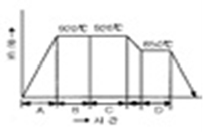
- A
- B
- C
- D
(정답률: 59%)
54. 열처리용 온도계중 팽창온도계는?
- 방사온도계
- 광전관온도계
- 저항온도계
- 봉상온도계
(정답률: 55%)
55. 순동제품에서 분위기 열처리시 발생하는 부풀음 현상의 주 원인이 아닌 것은?
- 동제품 표면 직하의 동산화물
- 분위기 중의 수소
- 동 표면의 과도한 산화
- 동 소재의 과도한 탈산 및 낮은 열처리 온도
(정답률: 36%)
56. 다음 중 고주파담금질 장점은?
- 담금질 시간이 많이 걸린다.
- 재료비 및 가공비 많이 든다.
- 국부가열이 불가능하다.
- 담금질 경화 깊이 조절 용이하다.
(정답률: 75%)
57. 가스침탄법에서 침탄품의 품질관리에 직접적으로 영향을 미치는 분위기 관리는 가장 중요한인자이다. 통상적으로 노 분위기를 관리하는 방법은?
- C분석
- CO분석
- CO2분석
- C3H8분석
(정답률: 52%)
58. 게이지강의 특성이 아닌 것은?
- 내마모성이 크로 경도가 높을것
- 담금질에 의한 변형 및 담금질 균열이 적을것
- 장시간 경과하면 치수의 변화 클것
- 내식성 좋을것
(정답률: 73%)
59. 강의 노멀라이징 온도를 나타낸 것은?
- A0 또는 A1+50℃
- A1 또는 A2+50℃
- A1 또는 A4+50℃
- A3 또는 Acm+50℃
(정답률: 56%)
60. 과잉침탄을 막기위한 대책으로 틀린 것은?
- 침탄 완화제 사용
- 침탄 후 확산처리
- 로내 탄소 농도 증가
- 1차 2차 담금질 실시
(정답률: 73%)
4과목: 재료시험
61. 현미경조직검사의 설명 중 틀린 것은?
- 현미경으로 관찰하려면 표면부식을 한다.
- 크리프한도를 측정할수있다.
- 표면은 연마해야한다.
- 미세조직검경의 상용 배율은 400 정도이다.
(정답률: 65%)
62. HRB스케일과 HRC스케일이 있는 경도계는?
- 브리넬
- 로크웰
- 비커즈
- 쇼어
(정답률: 40%)
63. 금속조직내의 양을 측정하는 방법 중 관계 없는 것은?
- 동심원측정
- 점의 측정
- 직선의측정
- 면적의측정
(정답률: 56%)
64. 실험실에서 사용하는 약품 중 인화성 물질이 아닌 것은?
- 석유벤젠
- 에텔에델
- 에틸알콜
- Mg분말
(정답률: 62%)
65. 방사선투과장비를 이용하여 비파괴검사를 할때 안전관리상 주의해야 할 사항으로 틀린것은?
- X선 검사시 Pb로 밀폐된 상자에서 촬영
- X선 촬영에 위험지구를 벗어난 위치에 방사선 표지판 설치
- 관 전압 상승속도에 유의하여 탐상기 사용
- 쵤영시에는 집지와 무관
(정답률: 67%)
66. 와류탐상 시험에서 시험코일의 형상으로 틀린 것은?
- 내삽형
- 관통형
- 프로브형
- 게이지형
(정답률: 50%)
67. 압축시험의 응력-압률 선도에서 ε=ασm 의 지수법칙이 성립된다. M ＞1일때 적용되지 않는 재료는?
- 피혁
- 강
- 주철
- 콘크리트
(정답률: 55%)
68. 인장시험편에 대한 설명으로 틀린 것은?
- 인장시험편의 규격은 KSB0801에 규정되어있다.
- 고정부의 치수는 시험기의 용량에 따라 짧을수록좋다.
- 시험편은 일반적으로 판상 또는 봉상이다.
- 시험편 중앙에 있는 단면이 균일한 부분을 평행부라 한다.
(정답률: 68%)
69. 금속재료의 피로시험에 관한 설명 중 거리 먼 것은?
- 합금강에서 굵은 직경의 시편일수록 회전 굽힘 피로 한도는 저하된다.
- 탄소강 표면을 평활하게 다듬질 할수록 피로강도는 향상된다.
- 정전등으로 피로시험이 장시간 중단되어도 연강의 경우에는 내구연한의 영향이 전혀 없다.
- 동일한 압연 강종에서 시료의 채취방향에 따라 피로한도는 다르다.
(정답률: 50%)
70. 재료의 표면에 균열이 발생되었을때 검사방법으로 맞는 것은?
- 방사선투과
- 초음파탐상
- 압축 응력시험
- 형광침투탐상
(정답률: 55%)
71. 다음 그림은 강자성체에 적용한 자기이력곡선을 나타낸 것이다. 이 곡선 중 항자력을 나타낸 구간은?
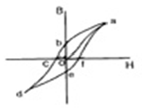
- o-a
- o-b
- o-c
- o-f
(정답률: 38%)
72. 4.3% 탄소의 공정점에서 상당하는 합금을 냉각하여 오스테나이트와 시멘타이트의 공정을 얻는 공정조직은?
- 펄라이트
- 페라이트
- 레데뷰라이트
- 수지상정
(정답률: 52%)
73. 취성재료 압축시험에서 ASTM이 추천한 봉상 단주형 시편의 높이와 직영의 비는?
- h=10d
- h=5d
- h=3d
- h=0.9d
(정답률: 68%)
74. 침투탐상검사에서 현상제의 요구조건으로 틀린 것은?
- 분산성 좋을 것
- 중성으로 검사체에 대해 부식성 없을 것
- 침투액의 흡출능력이 약한 미분말로 될 것
- 화학적으로 안정
(정답률: 63%)
75. 탄소강의 불꽃시험에 대한 설명중 틀린 것은?
- 강중의 탄소량이 증가하면 불꽃수가 많아진다.
- 탄소함량이 높을수록 유선의 색깔은 적색이다.
- 탄소량이 낮을수록 유선의 길이는 길며, 불꽃의 숫자는 많다.
- 불꽃을 관찰시 유선 한 개 한 개를 관찰하며, 뿌리부분은 주로 C Ni양을 추정한다.
(정답률: 50%)
76. 크리프시험과 관련 있는 것은?
- 하중-변형량
- 시간-변형률
- 응력-반복횟수
- 응력-변형륙
(정답률: 39%)
77. 경도측정에 대한 설명으로 틀린 것은?
- 쇼어경도시험은 다이아몬드추를 자유낙하한다.
- 비커즈경도시험에서 하중의 유지시간은 30초가 원칙이다.
- 로크웰경도시험의 기준하중은 10kg이다.
- 로크웰경도시편의 두께는 압흔깊이의 2배이상이다.
(정답률: 43%)
78. 피로시험에서 종축에 응력, 횡축에는 반복횟수를 나타내는 선도는?
- S-N곡선
- T-T-T 곡선
- Fe-C 선도
- 변형-응력곡선
(정답률: 52%)
79. 재료의 굽힘에 대한 저항력을 측정하는 시험법은?
- 전단시험
- 비틀림시험
- 피로시험
- 굽힘시험
(정답률: 66%)
80. 샤르피충격시험기를 사용하여 KS4호로된 철강재료 시험편을 충격시험하였다. 이때 해머의 중량은 20kg, 해머의 회전반경은 0.77m이며, 해머의 시험전 각도는 160이고 시험편 파단 후 해머의 각도는 120이었을때 본 시험편의 충격 값은?
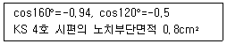
- 6.776
- 13.552
- 8.470
- 10.776
(정답률: 35%)